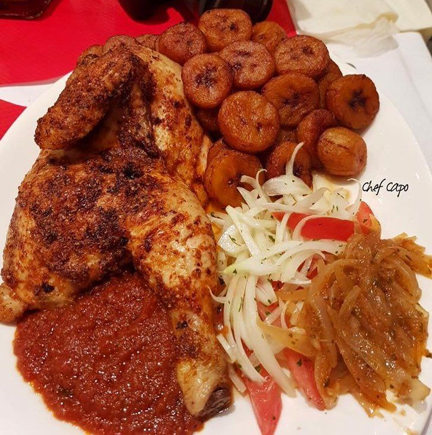

La recette d'alloko poulet

Description de la recette d'alloko et poulet
L'Alloco Poulet est un plat originaire de Côte d'Ivoire, composé de bananes plantains frites et de poulet grillé.
Ingrédients :
- 4 bananes plantains mûres
- 4 filets de poulet
- 2 oignons
- 2 tomates
- Jus de 2 citrons verts
- 2 piments
- 2 gousses d'ail
- 1/2 tasse d'huile d'arachide
- Sel et poivre
Instructions pour la réalisation du plat
- Épluchez les bananes plantains et coupez-les en rondelles d'environ 1 cm d'épaisseur.
- Dans une grande poêle, faites chauffer l'huile d'arachide et faites frire les rondelles de
bananes jusqu'à ce qu'elles soient dorées et croustillantes. Égouttez-les sur du papier
absorbant et réservez.
- Dans une autre poêle, faites cuire les filets de poulet grillés jusqu'à ce qu'ils soient bien
cuits. Réservez.
- Dans une troisième poêle, faites revenir les oignons hachés, l'ail écrasé et le piment
haché pendant environ 5 minutes.
- Ajoutez les tomates coupées en dés et laissez cuire pendant environ 10 minutes, en
remuant de temps en temps.
- Ajoutez le jus des citrons verts et laissez mijoter pendant encore 5 minutes.
- Ajoutez les rondelles de bananes plantains dans la poêle de sauce et mélangez bien pour
les enrober de sauce.
- Servez les rondelles de bananes plantains accompagnées de poulet grillé, arrosé de la
sauce aux oignons et tomates.
Bon appétit !
Odin Recette